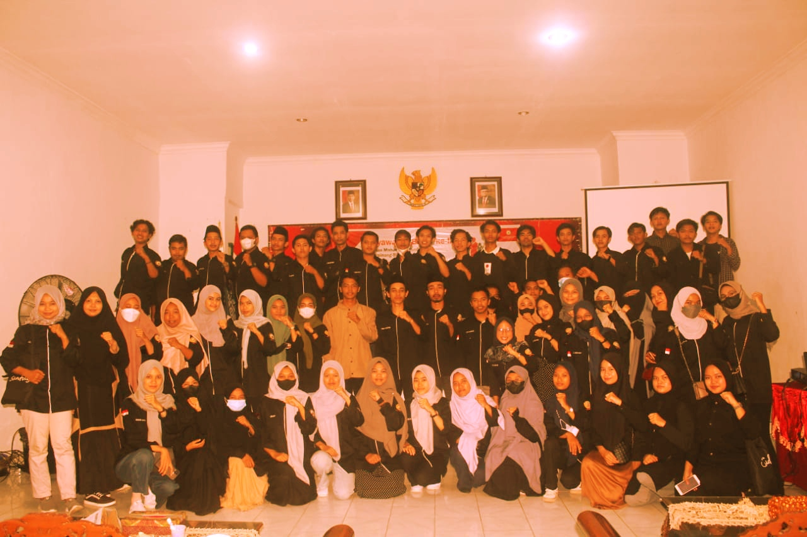

HIMK Menggelar Musyawarah Besar Ke-IX
Musyawarah Besar (Mubes) Himpunan Mahasiswa Kundur (HIMK) Tanjungpinang-Bintan yang ke-IX berkesempatan diselenggarakan di Aula Kodim 0315/Bintan yang terletak di Jl. Ahmad Yani Km 5, Kelurahan Melayu Kota Piring, Kecamatan Tanjungpinang Timur, Kota Tanjungpinang, Provinsi Kepulauan Riau.
Musyawarah Besar (Mubes) Himpunan Mahasiswa Kundur (HIMK) Tanjungpinang-Bintan ini dibuka oleh Kapten Infantri D.Sihombing sebagai perwakilan dari Komandan Kodim 0315/Bintan yaitu Kolonel Inf. I Gusti Ketut Artasuyasa yang pada saat itu berhalangan hadir. Kegiatan ini juga dihadiri oleh demisioner serta anggota HIMK Tanjungpinang-Bintan berjumlah 50 orang.
"Saya mengucapkan terima kasih kepada Himpunan Mahasiswa Kundur yang sudah menggunakan aula Kodim 0315/Bintan ini sebagai tempat pemilihan ketua umum untuk periode selanjutnya. Diharapkan kalian semua bisa tetap menjaga protokol kesehatan selama acara berlangsung," ucap Kapten Infantri D. Sihombing pada kata sambutannya.
Selain itu, Isnaniah Fatma Wati, selaku Ketua Pelaksana Musyawarah Besar Himpunan Mahasiswa Kundur (HIMK) Tanjungpinang-Bintan yang ke-IX, juga mengharapkan pada mubes ini agar bisa mendapatkan Ketua Umum yang amanah dan bertanggung jawab pada organisasi.
"Musyawarah Besar Himpunan Mahasiswa Kundur Tanjungpinang-Bintan kali ini memiliki tema Serumpun Petuah berpancang Amanah, kultur dibedah, Adab dibenah, yang berarti sebuah keputusan yang dijalankan harus senantiasa amanah dan budaya dilestarikan, serta etika budi pekerti diperbaiki demi menjaga sebuah lembaga organisasi. Dari tema tersebut kami berharap bisa mendapatkan seorang pemimpin yang amanah dan bisa menjaga Himpunan Mahasiswa Kundur Tanjungpinang-Bintan dengan baik," ucap Isnaniah Fatma Wati pada kata sambutannya.
Kegiatan ini diselenggarakan pada hari Selasa, 21 Desember 2021, dimulai dari jam 09.30 WIB untuk melakukan pembukaan. Selanjutnya yaitu pembahasan AD/ART lalu pembacaan visi dan misi calon-calon Ketua HIMK Tanjungpinang-Bintan.
Terdapat 2 calon ketua yang menyatakan sikap siap untuk maju menjadi calon ketua HIMK Tanjungpinang-Bintan. Dalam musyawarah untuk mufakat yang dilakukan sebagai proses pemilihan Ketua Himpunan Mahasiswa Kundur (HIMK) Tanjungpinang-Bintan periode 2021/2022, para peserta sidang sepakat memberikan amanah kepada saudara Kurnia Syahputra sebagai Ketua Umum Himpunan Mahasiswa Kundur (HIMK) periode 2021/2022.
"Terima kasih kepada teman-teman yang telah memberikan amanah kepada saya sebagai ketua HIMK. Semoga amanah ini bisa kita jalani bersama," ujar Kurnia pada kata sambutannya yang ditutup dengan jargon HIMK.